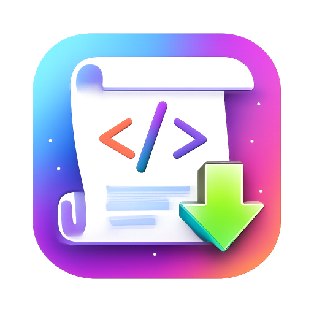

|
Waugu Scripts
|
|
WauguScripts
is een verzameling Windows‑hulpprogramma’s die ik heb ontwikkeld om
veelgebruikte handelingen te automatiseren. De tools zijn bedoeld om
tijd te besparen en repetitieve taken sneller uit te voeren, zonder
meerdere muisklikken of ingewikkelde commando’s of parameters te hoeven
onthouden. Elke applicatie heeft een duidelijke functie, zoals het maken
van back‑ups, het opruimen van tijdelijke bestanden of het tonen van
systeeminformatie. Bij elke download staat een korte uitleg van de
werking en de laatste wijzigingen. De programma’s zijn lichtgewicht,
veilig, reclamevrij en direct te gebruiken. Alle apps zijn voorzien van een duidelijke
Help‑functie.
DocuSafe.exe Versie 2.6.4 (08-02-2026)
Deze Back-up tool maakt eenvoudig een backup van je documentenmap
(of een andere map naar keuze).
Kopiëren:
- Eerste backup:
alle bestanden worden gekopieerd.
- Volgende backups: alleen
nieuwe of aangepaste bestanden worden toegevoegd.
- Ongewijzigde
bestanden worden overgeslagen → tijdswinst.
- Verwijderde
bestanden blijven staan tot je ze handmatig verwijderd.
Synchroniseren:
- Bestanden die niet meer in de bronmap staan,
worden in de doelmap verwijderd.
- Resultaat: een exacte kopie
van de bronmap.
Gebruik:
- Start de app.
- Stel bronmap
en doelmap in en kies tussen 'kopiëren' of 'synchroniseren'.
-
Foutcontrole is ingebouwd.
Nieuw in deze versie:
Laatste wijzigingen: Aan startmenu vastgepind icoon werd soms niet
goed weergegeven.
SysInfo.exe Versie 1.4.5 (30-10-2026)
Toont info over PC en besturingssysteem (OS info, Computer,
BIOS, Processor, Geheugen, GPU, Opslag, Netwerk en Bluetooth).
Gebruik:
Start de 'SysInfo.exe' en kies welke informatie getoond moet
worden.
Laatste wijzigingen: Auto-update controle verwijderd
omdat dit niet altijd goed werkte.
DelTemp.exe Versie 1.7.4 (30-10-2026)
Verwijdert gekozen tijdelijke bestanden.
Doel:
- Kan
helpen bij het oplossen van verschillende fouten in Windows.
-
Houdt de computer schoon en snel.
- Maakt ruimte schijfruimte
vrij. (Alleen belangrijk bij kleine schijven).
Functies:
- Er kan worden gekozen welke bestanden verwijderd
moeten worden.
- Er wordt een duidelijke uitleg gegeven wat de
gevolgen kunnen zijn.
- De app bevat 2 schermen (Standaard en
Advanced), elk met een eigen helpscherm.
Gebruik:
- Start
de 'DelTemp.exe' en kies welke bestanden u wilt verwijderen.
Laatste wijzigingen: Auto-update controle verwijderd omdat dit
niet altijd goed werkte.
Tip: Lees altijd eerst het bijgeleverde leesmij.txt-bestand.
© 2025 Waugu Scripts
Contact